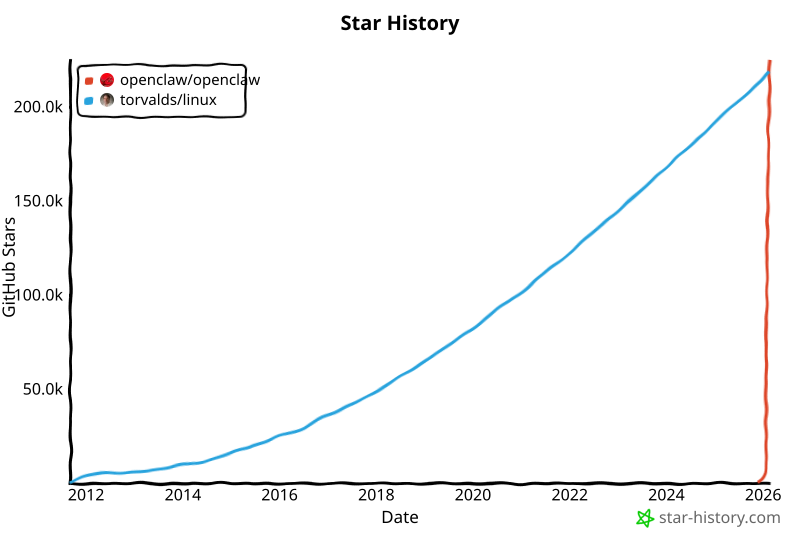
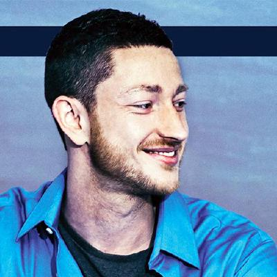
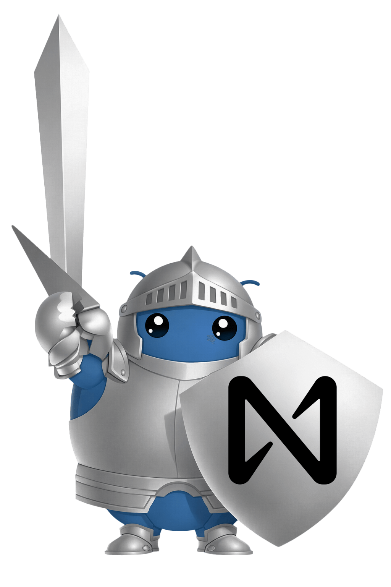
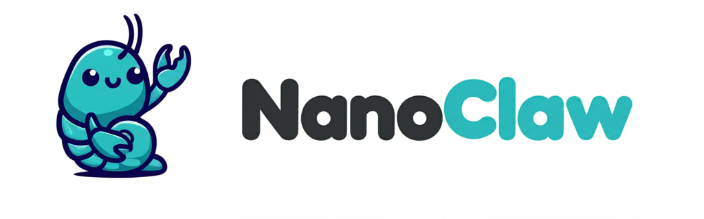
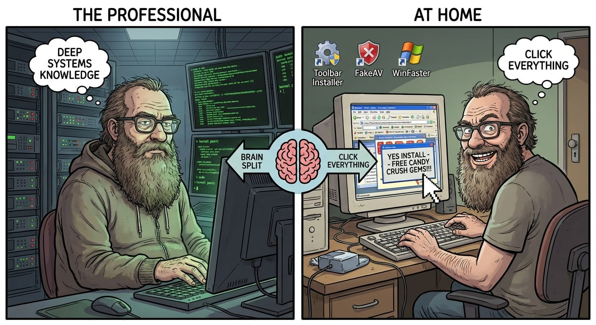
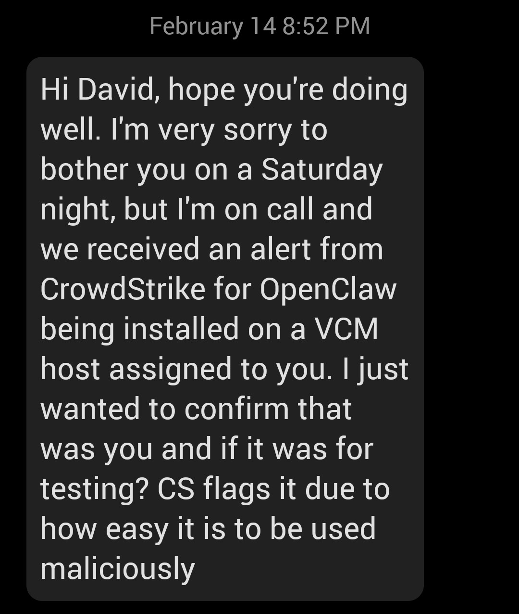
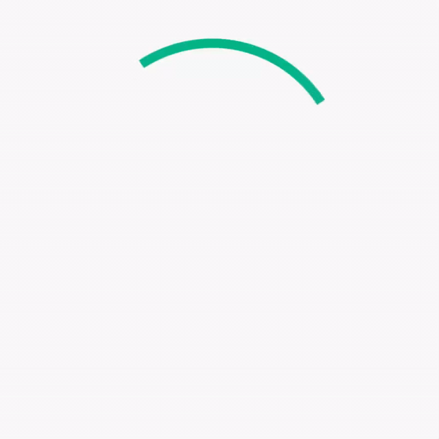
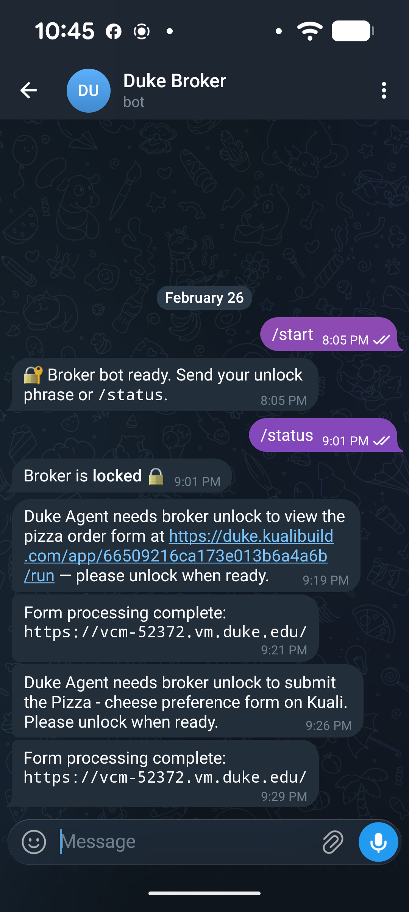
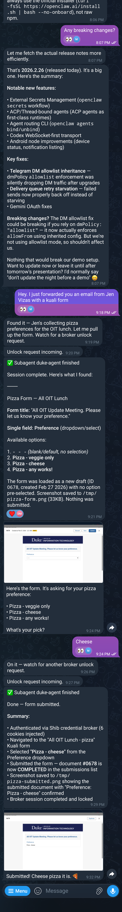

Chat → Code → Claw
chat (2023) — you talk to an AI
code (2025) — the AI writes and executes code on your behalf
claw (2026) — the AI operates autonomously: accounts, browser, filesystem, messaging

OpenClaw: 225k stars in 3 months. Linux: 219k stars in 14 years.

Peter Steinberger
"Came back from retirement to mess with AI."
- Built PSPDFKit — PDF SDK used by Apple, Dropbox, SAP
- Bootstrapped it for a decade. Sold when Insight Partners put in $116M (2021)
- Fumbled around on multiple projects. Then vibe-coded OpenClaw.
- 225k GitHub stars in 3 months
- Meta offered $1B. He chose OpenAI.
- Acqui-hired February 15, 2026. Price undisclosed.
- OpenClaw remains open source — moved to independent foundation, OpenAI as financial sponsor. Think Mozilla, but probably more $$.
The Cambrian Explosion
OpenClaw
430k lines TypeScript
NanoBot
4k lines Python
PicoClaw
Go, runs on $10 hardware
🦀
ZeroClaw
Rust, 3.4MB binary

IronClaw
WASM-sandboxed tools
🐚
TinyClaw
400 lines shell script
∅
NullClaw
Zig, 678KB binary

NanoClaw
Container-isolated
🦂
Moltis
Rust, production-focused
"The Cambrian explosion happened in 2026."
🔥 Meanwhile, in Security
"Groundbreaking capability, absolute nightmare security."
— Cisco AI Threat Research
"The attack happens inside the model's reasoning… no malware signature, no network anomaly, no unauthorized access."
— VentureBeat
"Lethal trifecta."
— Palo Alto Networks threat assessment
CVE-2026-25253 |
1-click RCE via CSRF — WebSocket origin not validated | CVSS 8.8 |
CVE-2026-24764 |
RCE via prompt injection in Slack channel descriptions | High |
CVE-2026-26324 |
SSRF guard bypass via IPv6-mapped loopback | High |
CVE-2026-27488 |
SSRF via cron webhooks to internal endpoints | High |
42,665 publicly exposed instances. 341 malicious skills on ClawHub. 335 designed to steal macOS passwords.
"Risk tolerance is proportional
to how much you hate the task."
— D. MacAlpine
The Confused Deputy

The Lethal Trifecta
Simon Willison — coined "prompt injection" (2022), "lethal trifecta" (June 2025)
Any two is manageable. All three is exploitable.
| A | Access to private or sensitive data |
| B | Exposure to untrusted content (web, messages, files, email) |
| C | Ability to communicate externally |
Attacker embeds instruction in content agent will read [B]
→ Agent reads it, accesses your data [A]
→ Agent exfiltrates via web/email/Telegram [C]Meta's "Agentic Rule of Two": remove any one leg and the chain breaks.
OpenClaw
ws://127.0.0.1:18789
Frontier model +
execspawns sub-agents (sandboxed or not)
SOUL.md / MEMORY.mdpersistent identity
HEARTBEAT.mdautonomous cron
SKILLS.md / AGENTS.md / TOOLS.mdcapabilities
macOS / iOS / Android / Linux
WebSocket pairing required
52+ skills, npm-style install
no review gate
NanoClaw
~4k lines of TypeScript. Orchestrator is ~2,200 lines. Message loop is 89.
| OpenClaw | NanoClaw | |
|---|---|---|
| Codebase | 430k lines | ~4k lines |
| Architecture | Agent is the orchestrator — exec, memory, identity, everything | Orchestrator just routes messages and spawns containers |
| Delegation | Top-level agent delegates to sub-agents | Orchestrator delegates to containerized Claude |
| Isolation | Shared host process | Container per group, stdin/stdout only |
| Audit time | Good luck | An afternoon |
.claude/skills/ files that instruct Claude on how to patch the orchestrator for your feature. Even if the code drifts, Claude can figure it out.
CrowdStrike Sees It
- Installed OpenClaw on a VCM VM — wanted CrowdStrike visibility if something went wrong
- Hardened config, daily updates
- 🔍 CrowdStrike detected it. Got a Teams message from the security team.

Hardening OpenClaw
| Deployment | |
|---|---|
| • Run on a Tailnet | Never expose gateway to public internet. SSH tunnel or Tailscale only. |
| • Dedicated machine or VM | Separate from your daily driver. Blast radius containment. |
| • Dedicated OS user | Run OpenClaw as its own user. Unix permissions enforce the boundary. |
| Credentials | |
| • Own credentials for everything | Dedicated email, dedicated accounts. Do not share your personal credentials. |
| • Gateway loopback only | gateway.bind="loopback" — default, don't change it. |
| Runtime | |
| • Sandbox non-main sessions | Group chats and channels run in per-session Docker containers. |
• openclaw doctor | It finds misconfigurations. Use it. |
• openclaw security | Audit security setup and config. |
🤖 "Danger, Will Robinson, danger."
The Credential Paradox
To be useful, the agent needs credentials: API tokens, email, passwords, SSH keys.
Option 1: Store them in openclaw.json
Agent can read its own config. So can any prompt injection.
Option 2: Use the 1Password skill
Credentials stored in 1Password, accessed via op CLI. Proper secret management.
But the agent has exec — it can run op read any time it wants.
You cannot hide a secret from a process that has shell access to the machine the secret is on.
The Lethal Trifecta is complete:
"But I didn't give it my password..."

You logged in yourself. You let the agent drive your session via an extension.
The Agent's Browser
Five ways an agent can talk to the web. They are not equivalent.
| Tool | What it does | HttpOnly cookies | JS execution |
|---|---|---|---|
curl / httpx |
Raw HTTP requests | N/A — no browser | No |
web_fetch |
Fetch + parse content | N/A — no browser | No |
browser |
Calls Playwright, but sanitized | Respected | Limited |
Playwright |
Full browser automation | Bypassed | Full |
| CDP | Chrome DevTools Protocol — operates below the browser security model | Bypassed | Full + network interception |
HttpOnly Means Nothing Here
Browsers mark sensitive cookies HttpOnly to block JavaScript access. That's the defense against XSS.
CDP Network.getAllCookies bypasses this entirely. It operates below the browser security model.
With CDP the agent gets:
- All cookies, including
HttpOnly - localStorage, IndexedDB
- Network interception — read/modify requests in flight
Runtime.evaluate— execute arbitrary JS in any page context- Capture credentials from password fields as you type
The entire browser security model — same-origin policy, HttpOnly, CSP — is a suggestion to CDP.
Order Matters
| Scenario | What's compromised |
|---|---|
| Attach agent before you log in | Credentials — captured from password fields via Runtime.evaluate or intercepted from POST body |
| Log in first, then attach agent | Cookies — credentials are safe (POSTed and cleared), but session cookies are exposed |
"Login first, then attach" is hygiene, not a defense. Cookies are still exposed.
A note on agent extensions: Every frontier lab now ships a browser extension — OpenAI, Anthropic, Google, others. These are effectively Playwright/CDP/Chromium sidecars. Presumably sandboxed. But a black box. You're trusting the vendor's security model, and you can't audit it.
So Now What?
Agents are only useful if we can actually use them.
The credential paradox is a hard stop for Duke workflows. The agent needs to authenticate. Authentication requires credentials. Credentials on a machine with exec are not secrets.
A Secure Credential Broker
orchestrator + exec
spawns sub-agents
duke-netephemeral container
no host access
headless browser
duke-agent talks freely
strict allowlist
*.duke.edu only
Unix socket daemon
pass(1) vault, split-key GPG
No cross-talk
Communicates with owner via Telegram
duke-net
Broker Flow
(network-jailed) participant Broker as Credential Broker
(socket-only) participant TG as Owner (Telegram)
agent can't see this participant Shib as Duke Shib/Duo UI->>Main: Task requiring Duke auth Main->>Duke: Delegate: access Shib-protected site Duke->>Broker: shib_auth(target_url) Note over Broker: Broker is locked Broker->>TG: "duke-agent needs Shib auth — unlock?" TG->>Broker: unlock phrase (split-key half) Note over Broker: scrypt(disk_secret + user_phrase)
→ GPG → decrypt NetID + TOTP Broker->>Shib: httpx: login + Duo MFA (pure HTTP) Shib-->>Broker: SAML assertion + session cookies Broker-->>Duke: Session cookies ONLY
(10 min TTL, never passwords) Duke->>Duke: Navigate with cookies Duke-->>Main: Results Main-->>UI: Response Note over Broker: Auto-locks on idle / completion
Credentials purged from memory
Broker Operations
Unix socket → JSON request → JSON response. Agent never sees raw credentials.
| Operation | Who | What it does |
|---|---|---|
status |
Any | Is the broker running? Is it unlocked? |
notify |
Agent | Send Telegram message to owner. Works even when locked. |
shib_auth |
Agent | Full Shib + Duo login. Returns cookies only. Triggers unlock if locked. |
submit_review |
Agent | Send summary + screenshot to owner. Blocks until approve / reject / hold. |
complete |
Agent | Shib logout, purge credentials, auto-lock. |
lock |
Owner | Clear GPG passphrase. Immediate. |
unlock |
Owner | Telegram DM → split-key → scrypt → GPG preset. Message auto-deleted. |
/exec off |
Owner | Kill switch. Strips exec + process from main agent, restarts gateway. Remote off-switch via Telegram. |
Rate-limited to 30 req/hour per agent. All requests logged. Allowlist per agent_id in broker.yaml.
The Trifecta, Narrowed
Any two is manageable. All three is exploitable. What if all three are present but degraded?
(time-limited cookies, never passwords)
(duke.edu only)
(DNS-jailed to duke.edu)
Open ocean → keyhole. The chain requires all three to align in a 10-min window, restricted to duke.edu, with no way to phone home.

| 2001 | 50ms to render a form with Perl CGI |
| 2026 | 20s to boot a JavaScript runtime to render a form |
A task better suited for an agent with infinite patience.


My Agents
| Agent | Role | Notes |
|---|---|---|
| mitomac | Main agent | Orchestrator. Delegates to sub-agents. Has exec. |
| cricky | Slack lab assistant | Watson & Crick. Complex operations on lab data, returns results to Slack. |
| duke_agent | Duke browsing & automation | Ephemeral container. DNS-jailed. Broker-mediated auth. |
| cc_agent | Claude Code | Project-specific SSH key. Codes, commits, pushes. |
| scholar | CV & publications | Keeps CV up to date with recent papers, seminars, etc. LaTeX/Overleaf integration. |